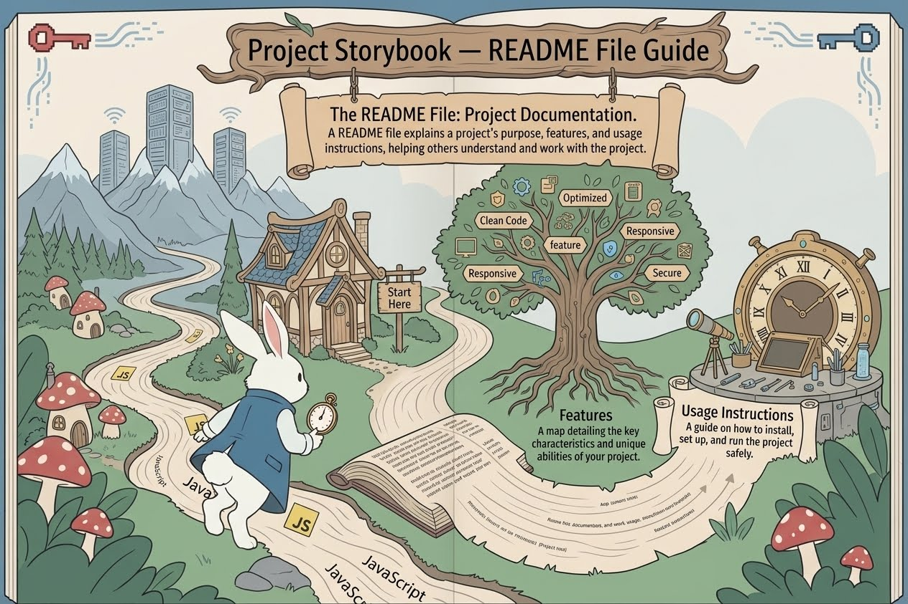
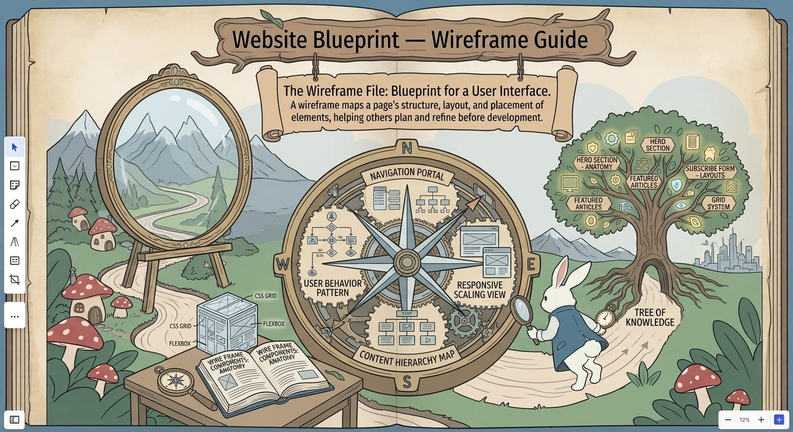

🐇 Rabbit Hole: Git Branch
Version Control: A Git branch lets developers create, edit, and test changes independently without affecting the main branch.
Read moreFollow the rabbit hole into Web Wonderland! Discover Git Branch, README File, and Wireframe which are secrets behind every webiste.
Version Control: A Git branch lets developers create, edit, and test changes independently without affecting the main branch.
Read more
Project Documentation: A README file introduces a project, explains its features, and shows others how to use it.
Read more
Website Planning: A wireframe is a visual blueprint that shows a website’s layout and element placement before development begins.
Read more